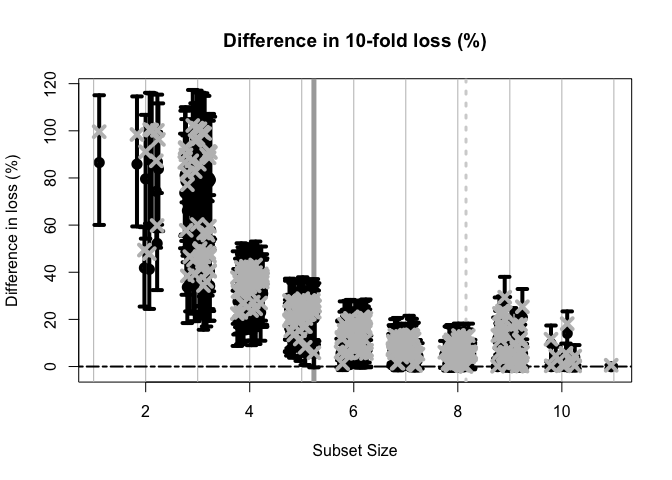
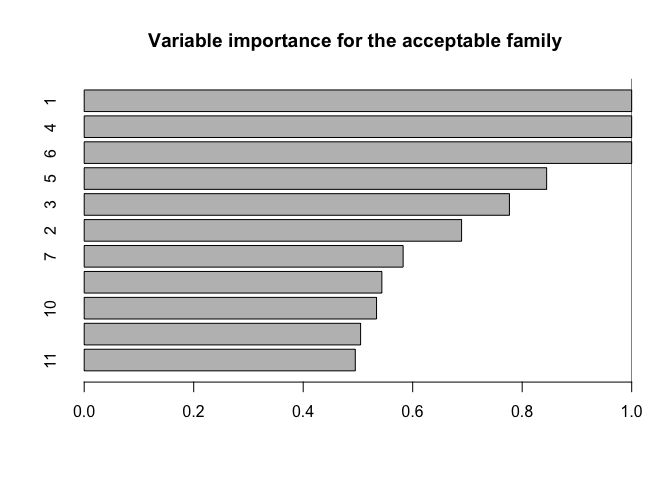
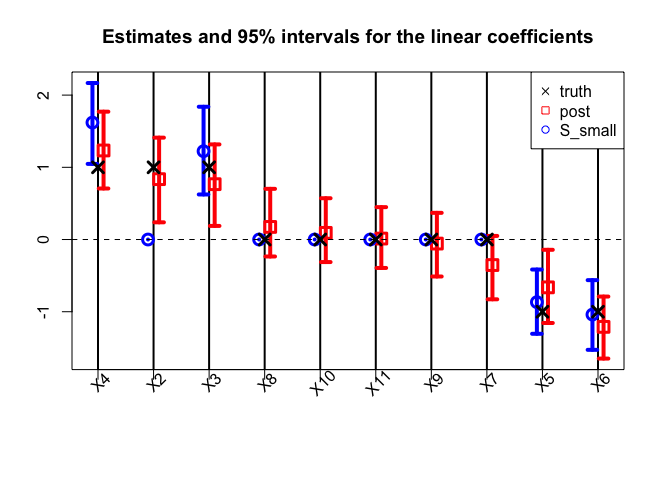

BayesSubsets provides Bayesian subset selection for a variety of Bayesian regression models. These include:
Bayesian regression of y ∈ ℝ or y ∈ {0, 1} on (n × p) covariates X (Kowal, 2022a)
Targeted prediction for h(ỹ), where h is a known functional that describes a key outcome of interest (e.g., y is continuous, and h is an indicator for exceedance of a threshold); multiple functionals can be considered for a single model (Kowal, 2021)
Bayesian linear mixed models that regress Y (m × n) on X, where we observe m repeated measurements for each subject i = 1, …, n (Kowal, 2022b).
These specific cases are explored in the vignettes.
For any Bayesian regression model M, BayesSubsets provides:
Optimal linear coefficients (with uncertainty quantification) for a given subset of covariates;
The acceptable family of subsets that are near-optimal linear predictors relative to the “best” subset (according to cross-validation);
The smallest acceptable subset, which prioritizes parsimony while maintaining predictive accuracy; and
The variable importance for the acceptable family, which provides variable-specific summaries of these near-optimal subsets.
The smallest acceptable subset is a reasonable default choice for subset selection. However, we caution against the overreliance on any single subset without compelling motivation. A key contribution of the acceptable family is that it identifies many competing explanations (subsets) that are nearly indistinguishable in predictive accuracy. From a purely predictive perspective, we cannot completely rule out any member of the acceptable family. As such, we recommend including the variable importance metric to summarize the many near-optimal linear predictors.
Installation
You can install the development version of BayesSubsets from GitHub with:
# install.packages("devtools")
devtools::install_github("drkowal/BayesSubsets")Example use
To illustrate the use of BayesSubsets, we present an example with simulated data and a Bayesian linear model. The vignettes explore this and other cases in more detail.
First, load the package:
Then simulate data:
# To reproduce:
set.seed(123)
# Simulate some data:
dat = simulate_lm(n = 200, # number of observations
p = 10, # number of predictors
p_sig = 5, # number of true signals
SNR = 1 # signal-to-noise ratio
)
# Store the data:
y = dat$y; X = dat$XNext, we fit a Bayesian linear model. The output from bayeslm does not include posterior predictive draws or log-predictive density evaluations, so we compute those as well.
# Package for efficient Bayesian linear regression:
library(bayeslm)
# Fit the Bayesian regression model:
fit = bayeslm(y ~ X[,-1], # intercept already included
N = 10000, # MCMC samples to save
burnin = 5000 # initial samples to discard
)
#> horseshoe prior
#> fixed running time 0.000730958
#> sampling time 0.104625
# Extract the posterior predictive draws and lpd:
temp = post_predict(post_y_hat = tcrossprod(fit$beta, X),
post_sigma = fit$sigma,
yy = y)
post_y_pred = temp$post_y_pred
post_lpd = temp$post_lpdUsing the model output, we enumerate a collection of “candidate subsets”. For small p it may be possible to include all possible subsets. Here, we screen to the “best” n_best = 50 models of each size according to squared error loss. We store these in a Boolean matrix indicators: each row is an individual subset, while the columns indicate which variables are included (TRUE) or excluded (FALSE).
indicators = branch_and_bound(yy = fitted(fit), # response is the fitted values
XX = X, # covariates
n_best = 50 # restrict to the "best" 50 subsets of each size
)
# Inspect:
indicators[1:5, 1:10]
#> X1 X2 X3 X4 X5 X6 X7 X8 X9 X10
#> force_in TRUE FALSE FALSE FALSE FALSE FALSE FALSE FALSE FALSE FALSE
#> TRUE TRUE FALSE FALSE FALSE FALSE FALSE FALSE FALSE FALSE
#> TRUE FALSE FALSE TRUE FALSE FALSE FALSE FALSE FALSE FALSE
#> TRUE FALSE TRUE FALSE FALSE FALSE FALSE FALSE FALSE FALSE
#> TRUE FALSE FALSE FALSE FALSE FALSE FALSE FALSE TRUE FALSE
# Dimensions:
dim(indicators)
#> [1] 362 11
# Summarize the model sizes:
table(rowSums(indicators)) # note: intercept always included
#>
#> 1 2 3 4 5 6 7 8 9 10 11
#> 1 10 45 50 50 50 50 50 45 10 1From this collection of 362 candidate subsets, we seek to filter to the acceptable family of subsets, i.e., those “near-optimal” subsets that predict about as well as the “best” subset. These are computed based on 10-fold cross-validation, and use the out-of-sample predictive distribution from M to provide uncertainty quantification for predictive accuracy.
# Compute the acceptable family:
accept_info = accept_family(post_y_pred = post_y_pred,
post_lpd = post_lpd,
XX = X,
indicators = indicators,
yy = y,
post_y_hat = tcrossprod(fit$beta, X))
# How many subsets are in the acceptable family?
length(accept_info$all_accept)
#> [1] 103
# These are the rows of `indicators` that belong to the acceptable family:
head(accept_info$all_accept)
#> [1] 107 157 158 159 160 161
# An example acceptable subset:
ex_accept = accept_info$all_accept[1]
which(indicators[ex_accept,])
#> X1 X3 X4 X5 X6
#> 1 3 4 5 6The plot shows how the out-of-sample predictive performance varies across subsets of different sizes, specifically relative (% change) to the “best” subset (by minimum cross-validated error; dashed gray vertical line). The x-marks are the (usual) empirical cross-validated error, while the intervals leverage the predictive distribution from M to quantify uncertainty in the out-of-sample predictive performance. While performance improves as variables are added, it is clear that several smaller subsets are highly competitive—especially when accounting for the predictive uncertainty.
If we wish to select a single subset, a compelling representative of the acceptable family is the smallest acceptable subset. This choice favors parsimony, while its membership in the acceptable family implies that it meets a high standard for predictive accuracy. From the previous plot, we select the smallest subset for which the intervals include zero (solid gray vertical line).
# Simplest acceptable subset:
beta_hat_small = accept_info$beta_hat_small
# Which coefficients are nonzero:
S_small = which(beta_hat_small != 0)
# How many coefficients are nonzero:
length(S_small)
#> [1] 5The “best” subset by minimum cross-validation often includes many extraneous variables, which is a well-known (and undesirable) byproduct of cross-validation.
# Acceptable subset that minimizes CV error:
beta_hat_min = accept_info$beta_hat_min
# Typically much larger (and often too large...)
sum(beta_hat_min != 0)
#> [1] 8For reference, the true model size is 6.
Returning to the smallest acceptable subset, we can obtain posterior samples and credible intervals for the coefficients as before:
# Draws from the posterior predictive distribution
post_beta_small = proj_posterior(post_y_pred = post_y_pred,
XX = X,
sub_x = S_small)
# Compute 95% credible intervals for the nonzero entries:
t(apply(post_beta_small[,S_small], 2,
quantile, c(0.05/2, 1 - 0.05/2)))
#> 2.5% 97.5%
#> X1 -1.6918273 -0.8464020
#> X3 0.6238419 1.8385971
#> X4 1.0472439 2.1673297
#> X5 -1.3055990 -0.4155887
#> X6 -1.5278812 -0.5626135Another useful summary of the acceptable family is the variable importance, which reports, for each variable j, the proportion of acceptable subsets in which j appears. We are particularly interested in distinguishing among those variables that occur in all, some, or no acceptable subsets, which provides insight about which variables are indispensable (“keystone covariates”) and which variables are part of a “predictively plausible” explanation.
# Variable importance: proportion of *acceptable subsets* in which each variable appears
vi_e = var_imp(indicators = indicators,
all_accept = accept_info$all_accept)$vi_inc
# "Keystone covariates" that appear in *all* acceptable families:
which(vi_e == 1)
#> 1 4 6
#> 1 4 6
# Irrelevant covariates that appear in *no* acceptable families:
which(vi_e == 0)
#> named integer(0)
# Visualize:
barplot(vi_e[order(vi_e, (ncol(X):1))], # order...
horiz = TRUE,
main = paste('Variable importance for the acceptable family'))
abline(v = 1)
Each variable appears in quite a few acceptable subsets, which is unsurprising: the covariates are moderately correlated, so it is reasonable to expect that some are roughly interchangeable in terms of predictive accuracy.
Finally, we compare the point and interval summaries from the smallest acceptable subset to the traditional point and interval summaries from the Bayesian linear model: the posterior mean and 95% credible intervals for β.

The traditional model summaries are completely dense: the point estimates β̂ are nonzero for all covariates. By comparison, the point estimates from the smallest acceptable subset are sparse, with only 5 active coefficients. Both sets of posterior summaries track the true coefficients reasonably well.
Additional documentation and examples are available at https://drkowal.github.io/BayesSubsets/.